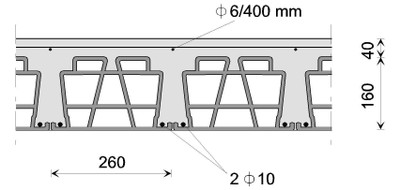

Sistema de techo compuesto por mampostería y concreto [RM3]
Viguetas de concreto colado in situ con tejas huecas de arcilla y cubierta de concreto reforzado colado in situ que algunas veces se superpone al techo. Estos techos pueden o no tener vigas de amarre de concreto reforzado en el perímetro.

Tejas huecas de arcilla con viguetas de concreto colado in situ, Slovenia (World Housing Encyclopedia Report 73)

Vigas prefabricada de arcilla hueca con tejas de arcilla, con vigas de amarre de concreto reforzado, Italia (Maffei et al., 2006)